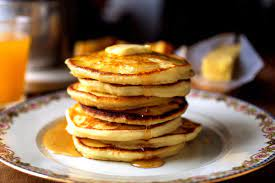

Clasisc Pancakes

Description
Ooooooh classic panckaes that will make oyu jump out of your socks and say "yipeeee" because how belly ruibbin' good they are
Ingredients
- 1 1/2 cups all-purpose flour
- 3 1/2 tsp baking powder
- 1 tsp salt
- 1 tbsp white sugar
- 1 1/4 cups milk
- 1 egg
- 3 tbsp melted butter
Directions
- In a large bowl, sift together the flour, baking powder, salt and sugar. Make a well in the center and pour in the milk, egg and melted butter; mix until smooth.
- Heat a lightly oiled griddle or frying pan over medium-high heat. Pour or scoop the batter onto the griddle, using approximately 1/4 cup for each pancake. Brown on both sides and serve hot